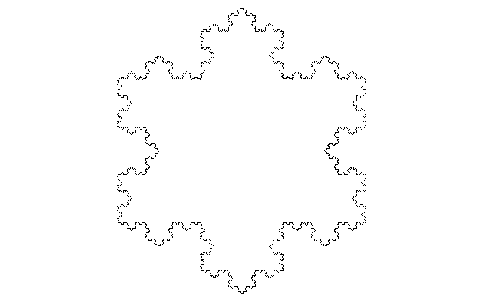

Fractal gallery
Koch Snowflake
A boundary that grows forever while enclosing a finite patch of space.
Begin with an equilateral triangle. Divide each side into thirds, lift the middle third into a pointed tent, and repeat the operation on every new segment. The outline becomes more elaborate at every step, but the snowflake never outgrows a finite region.

Grow a coastline
Set iterations to one and find the three original sides. At two iterations, each side becomes a new four-segment zigzag.
Advance step by step and watch the previous smallest segments become places for new segments.
Zoom into one point of the boundary. Add enough iterations and the local edge begins to resemble the complete snowflake's roughness.
Longer than any finite ruler
Each step makes the boundary \(4/3\) as long as before. Repeated without end, its perimeter becomes infinite even though the enclosed area approaches a finite limit. The boundary is too intricate to behave like an ordinary one-dimensional curve, but it does not fill a two-dimensional region.
Open Tools > Dimension calculator, select Koch Snowflake, and let box counting measure the boundary at several scales. The result describes the outline; the filled interior, if it were included, would simply have dimension 2.
Four segments replace one
Every segment produces four copies scaled to \(1/3\) of its length. The similarity dimension satisfies \(4(1/3)^D=1\), giving \(D=\log(4)/\log(3)\approx1.262\). After iteration \(n\), the boundary contains \(3\cdot4^n\) segments, each of length \(3^{-n}\) relative to an original side. A box-counting estimate from a finite render should move toward the theoretical dimension as useful scales and visible iterations are added.
How wxChaos constructs it
wxChaos renders the snowflake as line primitives. Each visible segment is recursively replaced with its four-part Koch pattern. Geometry outside the viewport is ignored, while deeper precision is brought in when zooming makes ordinary coordinates too coarse for neighboring pixels.